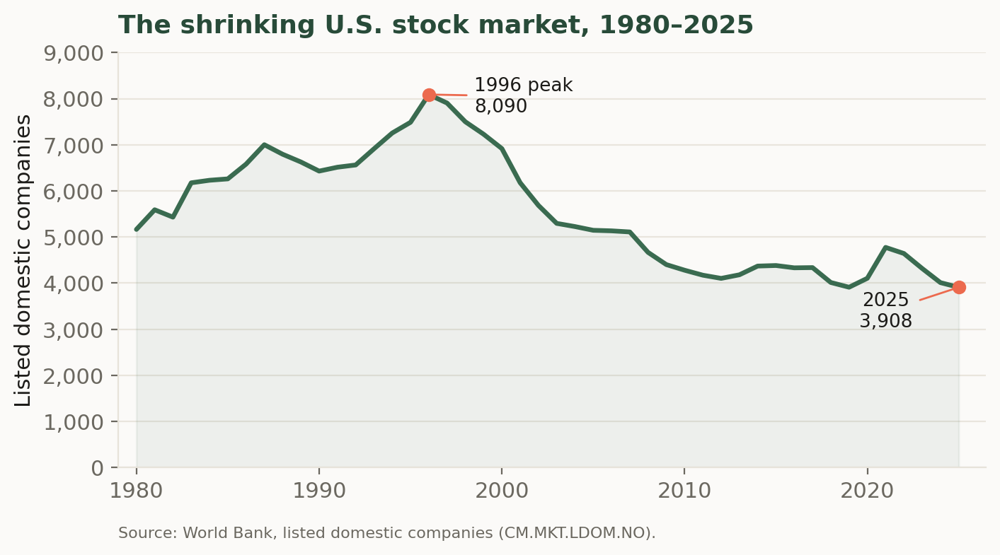
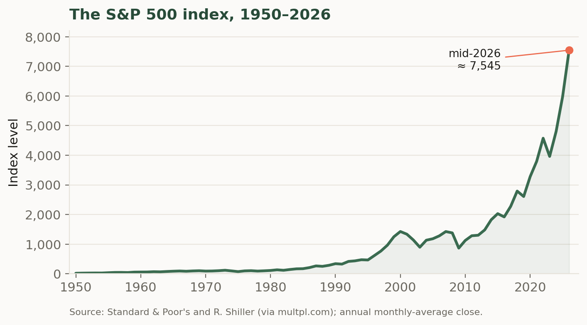
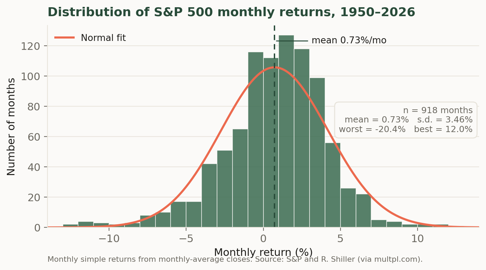

3 Markets
3.1 Introduction
Three questions animate the study of financial markets taken up in this chapter. First, how do buyers and sellers of financial assets find each other, agree on prices, and complete transactions reliably? Second, who guarantees that a completed transaction actually settles — that the seller receives payment and the buyer receives the asset — and how is that guarantee sustained? Third, what mechanisms allow investors to take on more exposure than their own capital would ordinarily permit, or to profit when they expect an asset’s price to fall? These questions matter because their answers shape the costs, risks, and opportunities faced by every participant in a financial system, from individual retail investors to large institutional players and, ultimately, to the firms and governments that depend on capital markets for funding.
The first question is important because, unlike markets for physical goods, financial markets must coordinate the simultaneous transfer of claims and cash between parties who may never meet and who cannot inspect what they are buying. The answer lies in market structure: the architecture of exchanges, over-the-counter dealer networks, specialists, and market makers provides the institutional machinery through which price discovery takes place and through which buy and sell orders are matched continuously. Understanding this architecture — and specifically the difference between centralized exchanges and decentralized OTC markets, and the role that market makers play in each — is the necessary foundation for understanding where prices come from and why transaction costs take the form they do.
The second question leads directly to one of the most consequential institutions in modern finance: the clearinghouse. Once a transaction is agreed, a clearinghouse interposes itself between buyer and seller, becoming the buyer to every seller and the seller to every buyer. It enforces settlement through a system of margin accounts, variation margin calls, and member reserves that ensure neither party can default without consequence. The same logic that governs margin at the clearinghouse level also governs the client-broker relationship, and understanding both layers of margin is essential for appreciating how systemic risk is managed — and how it can nonetheless accumulate, as the 2008 AIG episode illustrates.
The third question motivates the chapter’s treatment of leverage and short selling. Buying on margin allows an investor to amplify her position in an asset beyond what her cash alone would support, by borrowing from her broker against the collateral of the securities purchased. Short selling inverts the logic: the investor borrows the asset itself, sells it, and profits if the price falls before she must return it. Both strategies are governed by initial and maintenance margin requirements that create a feedback mechanism between price movements and required collateral, producing margin calls when markets move adversely. Recognizing how margin calls interact with market prices is essential for understanding episodes of forced deleveraging and liquidity crises.
The chapter is organized around the two institutional relationships that structure market activity. It begins with the client-broker relationship, covering street-name holding of assets, buying on margin with worked numerical examples, and the mechanics of short selling. It then turns to the broker-market relationship, examining OTC and centralized exchange structures, the specialist’s role in maintaining orderly markets, and the clearing and settlement process in detail. A closing survey of the asset classes — equity, fixed income, currency, and derivatives — maps the terrain that subsequent chapters will explore, and dwells on the one most investors meet first, U.S. equities: what a share of common stock actually is, how many such companies there are to invest in and why that number has shrunk, and what the historical record of the S&P 500 reveals about the distribution of market returns.
When a private company “goes public,” it taps the primary market this chapter describes — selling shares to investors for the first time. In June 2026, SpaceX completed the largest IPO in history: it priced at $135 a share, raised roughly $75 billion at a valuation near $1.8 trillion, and closed its first full day up about 20%. Two even more anticipated offerings are lined up behind it — Anthropic has filed for a listing that bankers expect could top $1 trillion, and OpenAI is reportedly preparing one of its own. How such offerings are priced, and how the secondary market then takes over to set the share price minute by minute, is exactly the machinery introduced here.
3.2 The client-broker relationship
Most investors in a market have access to asset markets through a broker. This broker acts on behalf of the investor to find buyers for the assets that the investor wants to sell and find sellers for assets that the investor wants to buy. When an investor instructs a broker to purchase an asset for her, the broker finds a seller in the relevant market and transfers payment to this seller (how this works will be discussed shortly). In general the broker will keep the asset that is purchased in street name. This means that the asset will be held in the name of the broker, but the broker will keep records indicating that the beneficial owner (i.e. the real owner) is the client. This custom makes the transfer of title on the assets easier.
For purchasing an asset this process is straightforward. Markets however, have developed in such a way that more exotic transactions are possible. Short selling an asset means to borrow the asset in order to sell it.
- Long position.
-
An investor holds a long position in an asset if she is the rightful owner of such an asset.
- Short position.
-
An investor holds a short position in an asset if she owes the security to another entity.
- Open position.
-
n. An investor holds an open position in an asset if she has either a short or a long position in that asset.
- Close a position.
-
v. To close a position is to transition from having an open position to a closed position. Thus, when the investor holds a short position, she must purchase the securities borrowed and return them to the lender in order to close the position. To close a long position an investor need only sell the security that she owns.
3.2.1 Margin
One important service that brokers provide for clients are loans used to purchase assets. Purchasing securities by using money on loan from a broker is called buying on margin. The Federal Reserve regulates [RegT] the maximum size of a loan that can be provided by a broker to a client for a new margin position. Currently, in order to open a new margin position a client can receive a loan for no more than 50% of the securities purchased. For the purchase of assets listed on the New York Stock Exchange or sold by the National Association of Securities Dealers, these two organizations stipulate that a margin position of at least 25% of the value of purchased securities must be held to maintain a long position and 30% of the value of a short position. In general, brokers will require that collateral on the loan be posted. Acceptable collateral usually includes cash as well as various other assets with some discount. For example, treasury securities may be posted as collateral at perhaps 98% of their market value. Riskier assets will have a larger discount applied for collateral purposes. The discount for many stocks is 25%. This discount is referred to as a haircut. If the value of the collateral falls below the market (NYSE or NASD) requirement then the broker issues a margin call to the client and requires that the client either post more collateral or have her position closed.
- Example.
-
Consider an investor that has $100,000 that she desires to invest in IBM Stock. The current market price per share (as of 5 Jan. 2008) is $86.82/share. Thus, the investor could purchase \(100,000/86.82 = 1151\) shares of IBM with the $100,000. The investor may also purchase shares on margin. Since the investor must post 50% of the total purchase as margin, she may purchase any amount up to the amount of shares worth $200,000, or 2303 shares. Assume that the investor purchases the full 2303 shares. She deposits the $100,000 in the margin account as collateral. The assets (the stock owned) of the client are now worth $200,000, but the client owes $100,000 to the broker. The difference between the assets of the client and the liabilities (the loan that must be paid back) is the client's equity in the position. Suppose that the price of the stock increases to $90.00/share. Then the value of the assets in the client's account is \(90\cdot2303 = 207270\). The liabilities are still $100,000 (assuming very little time has passed so that no interest on the loan has accrued), and the client's equity is $107,270 > $100,000. Thus, the owner has made $7,270. Suppose now that the price decreases to $75.00/share. Then the assets in the account are worth \(75\cdot2303 = 172,725\) and the client has lost money. If the maintenance margin is 30%, then when the equity in the account divided by the value of the assets falls below 30% then the client must put more money into the account. Thus, if
\[Margin = \frac{P\cdot 2303 - 100,000}{2303 \cdot P} < 0.3\]
then the investor will receive a margin call. In this example this occurs when the share price falls below $62.03.
3.2.2 Short selling
When a client instructs her broker to sell an asset short she is instructing the broker to borrow the asset from some market participant and then sell that asset. The client must make any dividend or interest payments that the asset offers to the person from whom the asset was borrowed. In general, brokers will require that collateral on the asset be posted to the client's margin account. As above, acceptable collateral usually includes cash as well as various other assets with some discount. The investor may withdraw any margin amounts in excess of the initial margin. To close out a short position, an investor must instruct her broker to purchase shares of the borrowed asset and return them to the entity that lent them.
- Example.
-
Consider a client that would like to sell short 100 shares of GM and hold that short position for 1 year. Assume that over the holding period GM does not pay a dividend. Suppose further that the selling price is $5.00/share. Thus the proceeds from the sale are $500. Suppose that the margin on this account is 50% of the asset value plus the proceeds from the short sale. Thus, the initial margin is $250 dollars in the margin account (or the haircut equivalent) as collateral. If the maintenance margin is 30% plus the initial purchase price, what can the price rise to before the client must post additional margin? In this case the assets in the account are the initial margin posting of $250 plus the value of the short sale ($500). The liability is the value of the stock that must be purchased to close the short position. Thus, the client's equity is \(250 + 500 - 100P\). The margin on this account is the total equity divided by the value that must be repaid to close the position. That is,
\[Margin = \frac{500 +250 - 100P}{100P}.\]
At the end of one year the price of the stock has moved to $3.00 per share. The margin in the account is now \((750 - 300)/300 = 1.5\). The trader can then close out her position by buying 100 shares at $3.00 to close the short position. The total amount of assets in the account are now $750 - $300. The rate of return for this position is \(450/250 - 1 = 0.8\) or 80%. If however the price increases to \(6.00\) then the margin in the account is just \(250/600 = 0.25\).
Margin. Mark-to-market. Short selling. Leverage.
3.3 The broker-market relationship
There are several types of markets in which assets are traded. One of the largest by transaction amount is the over the counter market. This market does not have a centralized exchange, but transactions occur between various dealers. Usually transactions are initiated by phone calls that are recorded. These markets have the benefit that traded contracts can be of nearly any form.
The alternative to the over the counter market is the centralized market. These can be open outcry (like the NYSE and many commodities markets) or electronic like NASDAQ. The role of all of these markets is for buyers and sellers of assets to find a mutually beneficial price. With a centralized exchange, the exchange acts as the buyer for every seller and the seller for every buyer. This is often done by means of a market specialist (or market maker)[Spec]. The exchange will hire a specialist to always be willing to offer a bid price (price at which they will purchase the asset) and offer (or ask) price (at which they would be willing to sell the asset). The specialist makes money because the bid-price and offer price are not identical.
- Example.
-
Suppose that a broker would like to purchase (on behalf of her client) 1000 shares of GE stock. The specialist lists the offer price as $17.50 per share. Thus the total cost to the broker is $17,500.00. The specialist transfers 1000 shares of GE to the broker's account and the broker transfers $17,500 from the client's account to the specialist. That same day, another investor wants to sell 1000 shares of GE stock. This investor (through his broker) approaches the specialist and is quoted a bid of $17.49. The investor then receives $17490.00 from the specialist and gives the specialist 1000 shares of GE stock. At the end of the day, the specialist has a net change of zero shares of GE stock and has a net cash position of $10.00 because it was willing to sell GE to anyone that was buying and buy GE from anyone that was selling.
Usually market makers are charged with maintaining an orderly market, (i.e. reducing unnecessary market volatility, maintaining relatively tight bid-ask spreads, etc.1)
After a transaction on an exchange is undertaken then the process of clearing begins. After a purchase has been agreed upon then the asset that has been purchased must be transferred to the buyer and the payment for that asset must be transferred to the seller. Usually this occurs 3 business days after the transaction (a norm that has become known as \(T + 3\).) The settlement procedure is usually conducted via a clearinghouse.
The clearinghouse has members. These members place securities and cash on deposit in a margin account with the clearinghouse to be used to clear and settle the transactions undertaken by these members. The clearinghouse holds these assets in trust until two members agree to a transaction and inform the clearinghouse that settlement will take place. On the day of settlement the clearinghouse then moves the asset from the clearinghouse account of the member representing the seller to the clearinghouse account of the member who represents the buyer. Likewise, cash is transferred from the buyer’s account to the seller’s account. Members pay a fee for the use of the clearinghouse and this fee is then passed on to market participants in the form of bid-ask spreads, or brokerage fees.
The clearinghouse acts as a guarantee to both parties in the transaction. It ensures that the buyer gets the asset and that the seller gets the cash. To do this, it must also have sufficient reserves to ensure against non-performance by either party. It does this by holding its own reserves and by establishing a maintenance margin for each of its members. If the balance in the margin account of a particular company falls below the maintenance margin then the member must post a variation margin (i.e. bump up the balance on the margin account). If the member fails to do so then the exchange can seize the assets in the margin account. Ensuring that margins remain high enough and charging a small fee in the case of member failure allow the clearinghouse to guarantee both parties in the transaction.
The margin requirements can be established based on a gross or a net basis. When they are based on a gross basis the margin is a fraction of the total value of all assets (both long and short) that the member holds in the clearing account. When margins are on a net basis the long and short positions are offset against each other. So if a member has two clients and one has a long position of 50 shares of GE while the other has a net short position of 30 shares of GE then the total position of the member is 20 shares of GE and the member must post margin on the value of these 20 shares.
The benefits of the clearinghouse have caused many OTC transactions to have similar properties. In particular, in many OTC transactions the parties must post collateral with each other. As the value of the transaction that they undertake changes, the amount of collateral that must be posted changes as well. We will see examples of this when we look at derivative markets. This collateral acts like a margin account.
- Example.
-
AIG had many collateralized OTC transactions in September of 2008. When its credit rating was downgraded by the various credit rating agencies on Monday evening, September 15th, it was required to post an additional 14.5 billion in collateral on various outstanding derivative as per its August quarterly report2 .
As with the case of the broker-client relationship, many assets traded in an OTC market or on centralized exchanges are marked to market for the purposes of margin and collateral determination.
The role of the market. OTC. Electronic markets. Specialists (market makers). Bid-Ask (offer) spreads. Margins. Collateral. Open interest. Netting.
3.4 The assets we will study
The institutions described so far — brokers, exchanges, clearinghouses — exist to move a handful of broad classes of financial asset between the people who own them and the people who want them. The remainder of these notes studies those classes in turn: equity, which represents ownership of a firm; fixed income, which represents a promise to repay borrowed money; currency, the claims used to settle transactions across national monies; and derivatives, whose payoffs are defined in terms of some other, underlying asset. We begin with the class most investors meet first, U.S. equities, and take up the others in the chapters that follow.
3.4.1 U.S. equities
A share of common stock is a unit of ownership in a corporation. The shareholder is not a lender to the firm but a part-owner of it, and this distinction organizes everything about how equity behaves.
- Common stock.
-
A security representing fractional ownership of a corporation. Its holder is a residual claimant on the firm’s assets and earnings — entitled to what remains only after employees, suppliers, and debtholders have been paid — and ordinarily carries the right to vote on corporate matters in proportion to shares held.
Three features follow from ownership. First, the shareholder’s claim is a residual one: bondholders and other creditors are paid on fixed schedules, and the equityholder receives whatever is left, whether that is a large distribution or nothing at all. This is why equity is riskier than the firm’s debt and why, in compensation, it has historically earned a higher average return — a trade-off that is the subject of much of the rest of these notes. Second, ownership usually confers control through the right to vote for directors and on major decisions. Third, ownership is protected by limited liability: a shareholder can lose the amount she paid for her shares but no more, so her downside is bounded while her upside is not. Firms may return cash to shareholders directly, as dividends, but a shareholder’s return comes just as much from capital gains — changes in the price at which the share itself trades in the secondary market described earlier in this chapter.
How many such companies are there to invest in? Fewer than there used to be. The number of U.S.-listed domestic companies rose through the 1980s and early 1990s to a peak of 8,090 in 1996, then fell by more than half over the following three decades, to roughly 3,900 by 2025 (Figure 3.1). The decline reflects a combination of forces: waves of mergers and acquisitions that fold public firms into one another, the growth of private capital that lets companies raise large sums without listing, a slower pace of new initial public offerings, and the fixed costs and disclosure burdens of being public. The result is a market that is narrower in the number of names it contains even as, in aggregate, it has grown enormously in value.

That growth in aggregate value is easiest to see through a stock market index. An index summarizes the prices of many stocks in a single number, so that its movement over time tracks the fortunes of the market as a whole rather than any one firm. The best known is the S&P 500, a capitalization-weighted index of about five hundred of the largest U.S. companies; because those firms account for the bulk of the market’s total value, the S&P 500 serves throughout these notes as a practical stand-in for “the market” whose risk and return we will study. Its long climb — from roughly 17 in 1950 to more than 7,000 in 2026 — is shown in Figure 3.2, and the contrast with the previous figure is instructive: the population of listed firms has shrunk, but the value of the survivors, and of the market they compose, has multiplied many times over.

An index level is useful for seeing the long sweep of the market, but what an investor actually earns from one period to the next is a return. The simple return on the index over a month is the percentage change in its level, \[r_t = \frac{P_t - P_{t-1}}{P_{t-1}} = \frac{P_t}{P_{t-1}} - 1,\] where \(P_t\) is the index level at the end of month \(t\). Returns, rather than price levels, are the raw material of everything that follows: risk, diversification, and the pricing models of later chapters are all stated in terms of the distribution of returns. It is worth looking at that distribution directly. Figure 3.3 is a histogram of the roughly nine hundred monthly returns to the S&P 500 from 1950 to 2026.

Several features of the picture recur throughout these notes. The distribution is centered at a small positive number — the market rose in a typical month, averaging about \(0.7\%\), so that a bit under two-thirds of all months were up months — which is the compensation investors earn for bearing risk. It is also spread out, with a standard deviation of roughly \(3.5\%\) per month; this dispersion is precisely the risk that the return is compensation for, and measuring it is the business of the next several chapters. The bell-shaped normal curve overlaid in coral fits the center of the data reasonably well, which is why the normal distribution is such a convenient modeling assumption. But the fit is imperfect in exactly the way that matters most: the far left tail is fatter than the normal allows, because occasional crashes — the worst month here is about \(-20\%\) — occur more often, and are more severe, than a normal distribution would predict. This combination of a modest positive average, substantial month-to-month volatility, and rare but violent losses is the empirical backdrop against which the rest of the theory is built.
3.4.2 Other asset classes
Fixed income. Currency. Derivative. The types for each.
- RegT
-
See
http://ecfr.gpoaccess.gov/cgi/t/text/text-idx?c=ecfr&sid=c0c4d10c3fe913a35bfeb48789ef5511&rgn=div5&view=text&node=12:3.0.1.1.1&idno=12for the full regulation. The guidelines defining lending between brokers and clients is known as Regulation T. - Spec
- There are some technical differences between specialists (which is the name for those on the NYSE) and market makers (a more general term) but for our purposes we will assume that they are the same.
3.5 Application: A founder deciding how to go public
Imagine the chief financial officer of a fast-growing software company weighing how to raise its next round of capital and give early investors a way to cash out. The choices on the table — a traditional initial public offering, a direct listing, or remaining private and selling a stake to a large fund — are exactly the primary-market mechanisms this chapter describes. To choose well, the CFO must understand how underwriters price a new issue, how the secondary market will set the share price once trading begins, and how liquidity and the composition of the investor base affect the cost of capital the firm ultimately pays. The institutional details that can seem dry in the abstract — order types, market makers, the distinction between primary and secondary trading — become the levers on a multi-hundred-million-dollar decision the moment a real company tries to access the market.
The Indicator from Planet Money (NPR) — “The SpaceX IPO drama explained”: why a company goes public, and how the primary market has changed now that giants like SpaceX can stay private for so long.
3.6 Homework problems
3.6.1 Conceptual
MKT-C1. Your brokerage holds all of your shares in street name, so the certificates list the broker as the registered holder while its books record you as the beneficial owner. A friend argues this is dangerous because “the broker legally owns your stock.” Explain what street-name holding actually accomplishes for the mechanics of trading, why it makes transferring title easier when you sell, and what really protects your claim as beneficial owner.
MKT-C2. Distinguish a long position from a short position, and explain what it means to close each of them. In your answer, state precisely what action an investor must take to close a long position versus a short position, and why closing a short requires a purchase in the market while closing a long requires only a sale.
MKT-C3. Two investors each want $200,000 of exposure to the same stock. One pays the full $200,000 in cash; the other posts $100,000 and buys the rest on margin. The stock then falls 20%. Explain why the margin investor’s percentage loss on her own capital is larger than the cash investor’s, and describe how a maintenance-margin requirement could force the margin investor (but never the cash investor) to sell at exactly the worst moment.
MKT-C4. Explain the difference between the initial margin requirement set by Regulation T and the maintenance margin requirement set by the exchange (NYSE/NASD). Why does the maintenance requirement, rather than the initial one, determine when a margin call is triggered, and why must the maintenance requirement be lower than the initial one for the arrangement to make sense?
MKT-C5. A short seller borrows a stock, sells it, and hopes to buy it back cheaper later. Explain why a short position exposes the investor to (in principle) unlimited losses while a long position does not, and explain why the short seller — not the lender of the shares — must make good any dividend the stock pays while the position is open.
MKT-C6. When a client sells short, the broker requires collateral in the margin account and the position is marked to market over the holding period. Explain what “marking to market” means for a short position, why it is used, and how it produces a margin call when the shorted stock’s price rises rather than falls.
MKT-C7. A specialist on a centralized exchange quotes GE at a $17.49 bid and a $17.50 offer and, over a day, buys from every seller and sells to every buyer. Explain how the specialist earns a profit even though it ends the day with a net change of zero shares, and explain why a market maker charged with maintaining an “orderly market” might widen its bid-ask spread during a period of unusually high volatility.
MKT-C8. Contrast an over-the-counter (OTC) market with a centralized exchange. Explain one advantage each structure offers — in particular, why OTC markets can accommodate contracts “of nearly any form,” and why a centralized exchange with a specialist standing ready to buy and sell can offer more reliable price discovery and liquidity.
MKT-C9. A clearinghouse interposes itself between buyer and seller, becoming the buyer to every seller and the seller to every buyer. Explain how this arrangement, combined with member margin accounts and variation-margin calls, lets the clearinghouse guarantee settlement even if one party defaults. Then explain, using the AIG episode, how the same collateral logic applied to OTC contracts can transmit stress rather than contain it when a participant’s credit rating is downgraded.
MKT-C10. Explain what the settlement convention “\(T+3\)” means and why settlement does not occur instantaneously at the moment of trade. Describe the role the clearinghouse plays during the interval between trade and settlement, and why interposing the clearinghouse reduces the counterparty risk each side bears during that interval.
MKT-C11. A clearing member has two clients: one with a long position of 50 shares of GE and one with a short position of 30 shares of GE. Explain how much stock the member must post margin on under gross margining versus net margining, and explain why a clearinghouse worried about a member’s total risk exposure might prefer gross margining even though net margining is cheaper for the member.
MKT-C12. Explain the economic function of the haircut applied to collateral posted against a margin loan or short position. Why is the haircut larger for volatile stocks (around 25%) than for Treasury securities (around 2%), and how does the size of the haircut protect the broker or clearinghouse against a decline in the collateral’s value before a position can be liquidated?
3.6.2 Quantitative
MKT-Q1. An investor has $60,000 in cash and buys a stock at $40/share on margin, borrowing so that her total position is the maximum allowed under a 50% initial-margin requirement. (a) What is the largest dollar position she can take, and how many shares does she buy? (b) State her assets, her loan liability, and her equity immediately after the purchase.
MKT-Q2. Using the long-margin formula from the chapter, \[Margin = \frac{P\cdot N - L}{N\cdot P},\] suppose an investor holds \(N = 2000\) shares purchased on margin with an outstanding loan of \(L = \$70{,}000\), and the maintenance margin is 30%. Solve for the price \(P\) at which she receives a margin call.
MKT-Q3. An investor buys 1000 shares of a stock at $80/share, borrowing $40,000 (the maximum under a 50% initial-margin requirement) and posting the rest from her own cash. The maintenance margin is 25%. Using the long-margin formula \(Margin = (P\cdot N - L)/(N\cdot P)\), find the price \(P\) at which she receives a margin call.
MKT-Q4. An investor buys 2303 shares at $86.82 using $100,000 of her own cash and a $100,000 broker loan (ignore interest). If the price rises to $95.00/share, compute her equity and her rate of return on the $100,000 she invested. Compare this to the rate of return she would have earned had she instead bought only the 1151 shares her cash alone could buy.
MKT-Q5. An investor takes a $100,000 position in a stock, financing half ($50,000) with her own cash and half with a broker loan at 50% initial margin (ignore interest). (a) If the stock rises 10%, compute her equity and her rate of return on her $50,000. (b) Compare this to the 10% return she would have earned with no leverage, and state the leverage factor that relates the two returns.
MKT-Q6. A client sells short 200 shares of a stock at $8.00/share. The margin is 50% of the asset value plus the proceeds of the short sale, so the equity in the account is \((200)(8.00) + \text{initial margin} - 200P\). (a) Compute the initial margin she must post. (b) Write the margin ratio as a function of the current price \(P\). (c) If the maintenance margin is 30%, find the price \(P\) at which she receives a margin call.
MKT-Q7. A client sells short 100 shares of a stock at $5.00/share, posting an initial margin equal to 50% of the asset value plus the proceeds of the short sale. Write the margin ratio as a function of the current price \(P\), and, if the maintenance margin is 30%, find the price \(P\) at which she receives a margin call.
MKT-Q8. Using the short position in MKT-Q6, suppose the price falls to $5.00/share and she closes the position. Compute the profit on the trade and the rate of return on the initial margin she posted.